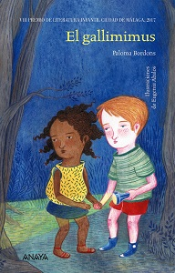
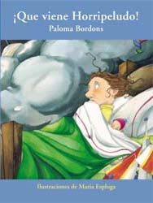
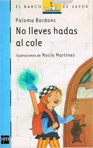

Para leer
Estos son algunos de mis libros, empezando por los más recientes. Pincha en cada uno para saber más sobre él.




Lista de libros publicados
Aquí tienes una lista completa de todos los libros que he publicado.
- Maripopis. Barcelona: Edebé, 2023
- El Gallimimus. Madrid: Anaya, 2017
- La bobada celeste. Madrid: Anaya, 2017
- La playa del otro lado. Barcelona: Edebé, 2017
- Malas compañías. Barcelona: Edebé, 2014
- Rollitos de primavera. Barcelona: Edebé, 2014
- La gruta de las escorias. Madrid: SM, 2010
- La noche de los cuchicuchis. Barcelona: Edebé, 2009
- ¡Que viene Horripeludo! Barcelona: Edebé, 2009
- Tengo el aura un poco gris. Madrid: SM, 2009
- Pollos, pepinos y pitufos. Madrid: SM, 2008
- Quiero ser un difficult teenager. Madrid: SM, 2008
- Siruza y Tú. Barcelona: Edebé, 2007
- El dedo que no era un finger. Madrid: SM, 2007
- Totopo y Polpeta. Barcelona: Edebé, 2007
- De excursión con un cepellón. Madrid: Edebé, 2006
- Ograntes y gigantogros. Madrid: SM, 2006
- What a viaje. Madrid: SM, 2006
- No lleves hadas al cole. Madrid: SM, 2005
- Mi abuelo el Presunto. Barcelona: Edebé, 2004
- Sombra. Madrid: SM, 2004
- Marijota Más Mejor. Barcelona: Edebé, 2003
- Hojas de líneas cojas. (poesía) Diputación provincial de Málaga, 2003
- Cuando fui grumete. Madrid: Alfaguara, 2000
- Leporino Clandestino. Madrid: SM, 1999
- Qué cornucopia. Madrid: Espasa Calpe, 1999
- Mi vecina es una bruja. Barcelona: Edebé, 1999
- La tierra de las papas. Madrid: SM, 1996
- Quiero ser famosa. Madrid: SM, 1994
- De noche. Madrid: SM, 1995
- El gato de angora azul. La Paz. Secretaría Nacional de Educación de Bolivia, 1994
- Cosas que se pierden. La Paz: Secretaría Nacional de Educación de Bolivia, 1994
- Demonios en camiseta. Barcelona: Edebé, 1994
- En casa de los Colodrillo. Madrid: SM, 1993
- Érame una vez. Madrid: SM, 1992
- La señorita Pepota. Madrid: SM, 1991
- Mico. Madrid: SM, 1991
- La recaraba. Madrid: SM, 1988
- Chis y Garabís. Madrid: SM, 1987
Obras colectivas:
- Cuarenta cuentos a todo vapor. Madrid: SM, 2018
- Don Quijote cabalga entre versos. León: Everest, 2005
- La tierra, qué pasada de planeta. Madrid: SM, 2002
- Un barco cargado de cuentos. Madrid: SM, 2002
- Cuentos azules. Madrid: SM, 2001
- Va de cuentos. Madrid: Espasa, 1999